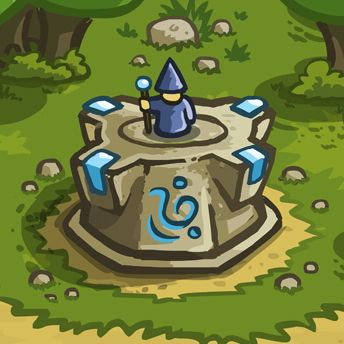

Ini adalah halaman web statis yang dibuat menggunakan Bootstrap untuk memenuhi tugas Jobsheet 10.
Lihat SelengkapnyaHalaman ini menggunakan sistem grid Bootstrap untuk mengatur tata letak. Kolom ini berukuran 7 dari 12.
| Komponen | Status |
|---|---|
| Navbar | Selesai |
| Jumbotron | Selesai |
| Gambar | Selesai |
| Bonus (Grid, Alert, Tabel) | Ditambahkan |
Gambar di bawah ini menggunakan class `.img-fluid` agar responsif dan `.rounded` agar sudutnya melengkung.
